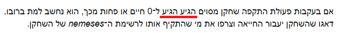

ים,
עוד לא התחלתי את מחברת 2. אם אוריד אותה שוב - אקבל עם כל התיקונים, או שתיקנת רק אצלך ואני צריכה לתקן אצלי?
תיקנתי אצלי, ישוחררו יחד עם מחברת 3
2 לייקים
עוד אחד. מחברת 2, תרגיל אחרון 

2 לייקים
אפילו לא קלטתי את זה חחח
התעות בדוקומנתציה של פוסטאופיס היא בכוונה?
def send_message(self, sender, recipient, message_body, urgent=False):
urgency (str, optional): The urgency of the message.
זה לא צריך להיות
*urgent (bool, optional): The urgency of the message.
?
מופיע בתיקון מספר 5
כן אבל זה גם bool ולא str. 
לייק 1
צודקת! אתקן
היי היי ב"צב שלוח" נכתב:
“הפעולה search_inbox תקבל כפרמטרים שם משתמש ומחרוזת.
היא תחזיר כרשימה את כל ההודעות שמכילות את המחרוזת, בכותרת שלהן או בגופן.”
לא זכור לי שבמחלקה המקורית הייתה אפשרות להוסיף כותרת להודעה. השאלה אם מצופה מאיתנו להוסיף פיצ’ר שנותן כותרת להודעה? או שמדובר בטעות ואין צורך להתייחס לנושא הכותרת?
זה חלק מהתרגיל.
לייק 1
למה הכוונה שזה חלק מהתרגיל?
כתוב: "היא תחזיר כרשימה את כל ההודעות שמכילות את המחרוזת, בכותרת שלהן או בגופן.”
לא רשום שום דבר לגבי הוספת פיצ’ר כותרת כלשהו.
בקיצור זה לא כלכך ברור מה צריך להיעשות בנידון…
שאלה בנוגע לתיעוד:
בקשר לתרגיל אורטל קומבט, הפעולה attack אמורה לעשות כל מני דברים, אבל אני לא ראיתי צורך בהכרח בהחזרת ערך מסויים. אם זה נכון שאין ערך מוחזר, כשאני מתעד אני יכול פשוט לדלג על החלק של ‘returns’?
אם פונקציה לא מחזירה משהו היא מחזירה None וצריך ציין את זה.
בנוגע לשאלה של חלק מהתרגיל - זה לא היה קיים בקוד המקורי אבל בדרישות החדשות מציינים את זה … משמע
שזה עכשיו חלק מהתרגיל.
כן כתוב בהוראות שאיפה שמתבקש לשנות ולהוסיף, צריך לעשות את זה.
וכתוב לחפש גם בכותרת (וגם בגוף ההודעה). אז כנראה זה אחד המקומות שמתבקש על פי ההוראות לשנות ולהוסיף
אשמח לדעת איפה זה כתוב, כי לא ראיתי את זה בשום מקום
הבנתי. שאלה בקשר לנושא: בכל פונקצייה שאני כותב, אני חייב בסוף לכתוב returns none? או שאם אני לא רושם כלום זה בעצם שווה ערך לreturns none?
בסוף ההוראות של צב שלוח:
"
חלק ממטרת התרגיל היא תרגול היכולת שלכם להיכנס לקוד קיים.
נסו לשנות את הקוד הקיים במידה, והסבירו את השינויים שלכם אם לדעתכם עולה צורך כזה.
"
אם יש פעולה שגם לא מקבלת ארגומנטים, אצטרך להוסיף גם בתיעוד args: none? או שבמקרה הזה פשוט לא לציין args?
עוד שאלה: כשאני מגיש את התרגיל צב שלוח, אני צריך להגיש את זה ביחד עם הקוד הקיים? או שרק את החלק שאני מוסיף?